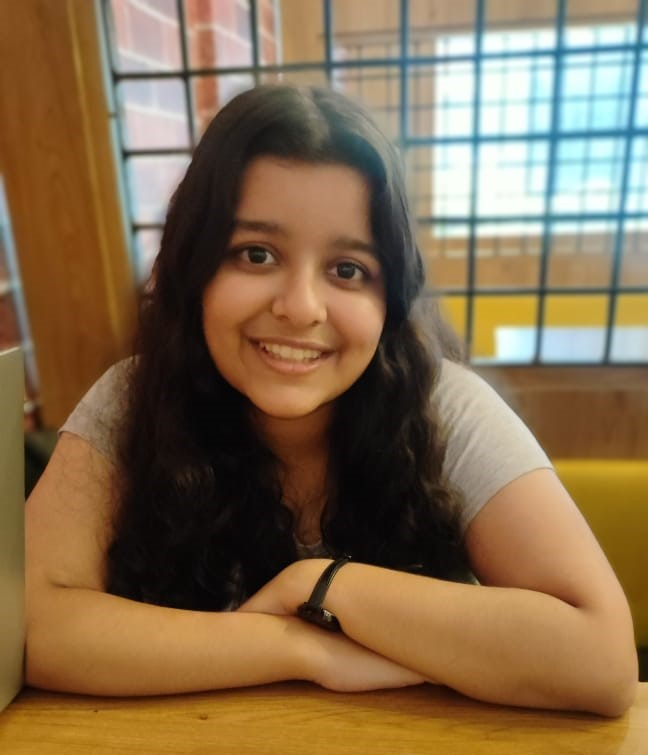

SHREYA GUPTA
Web Developer Portfolio
Objective:To develop cool and interesting websites.
Education:
BTech in Electronics And Communication,VNIT Nagpur 2021-2025(expected)
Grade:8.71
Work Experience:
Summer Intern IvLabs
Self-Driving Vehicle
-
Aimed at training an autonomous driving agent in self driving vehicle
environment using classical Reinforcement Learning Techniques.
-
Implemented Q Learning algorithm to train a Reinforcement Learning
agent on highway environment by using LiDAR observation to
measure the relative distances of the ego vehicles from other
vehicles.
-
The agent learns to take optimal actions after training for a while and
also maximize its reward by avoiding collisions with other vehicles.
Skills
Tools:
-
MATLAB
-
SIMULINK
-
GIT
-
NI Multisim
-
FUSION 360
Libraries:
-
NumPy
-
OpenCV
-
Matplotlib
-
Gym
Hardware Tools:
-
Arduino
-
ESP32
Other Projects
Projects